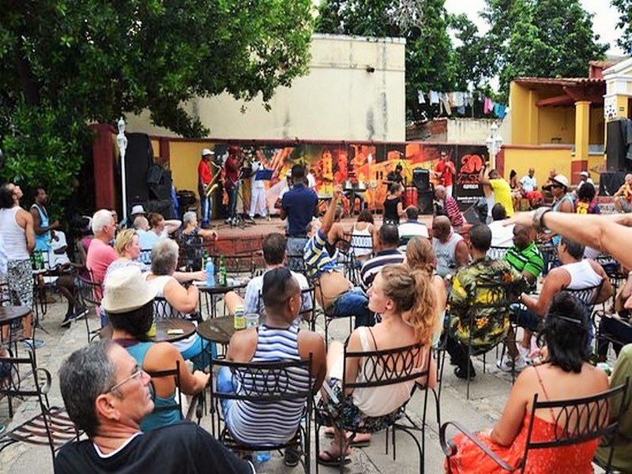

Music and Baile
For travelers craving culture with a heartbeat, Cuba offers an unforgettable music and dance experience woven into its cities, streets, and sunsets. In Havana, live bands serenade guests in open-air casas de la música, while dancers ignite the stage with passionate salsa and rumba—a must-see at the legendary Tropicana cabaret. Over in Trinidad, cobblestone squares come alive as locals and visitors groove to infectious rhythms in spontaneous street parties.
Interested in learning the moves? Many resorts and cultural centers offer dance workshops led by local pros who’ll get you spinning in no time. Music lovers should also visit Santiago de Cuba, the birthplace of son cubano, for vibrant festivals like the July Festival del Caribe, where performances flood the city with color and soul.
Whether you join a dance circle or just tap your toes with a mojito in hand, Cuba’s musical spirit wraps around you, turning every moment into a celebration.
Traditional Cuban Music
Cuba’s musical roots run deep, shaped by centuries of African and Spanish influence that gave rise to iconic genres like son cubano, danzón, bolero, and rumba. These styles blend poetic lyrics, syncopated rhythms, and vibrant instrumentation—think tres guitars, conga drums, and maracas—to create a sound that’s unmistakably Cuban.
Legendary artists like Beny Moré, known for his velvety voice and timeless boleros, and Compay Segundo, whose song Chan Chan became a global anthem through the Buena Vista Social Club, helped define Cuba’s musical identity. Other classics like Guantanamera and Lágrimas Negras continue to echo through plazas and patios, connecting generations through melody.
Whether performed in a quiet courtyard or a lively casa de la trova, traditional Cuban music is more than entertainment—it’s a living archive of the island’s history, spirit, and pride.
Dance Under Las Estrellas
Don’t just watch—join in! Cuba offers countless chances to move your feet. Catch world-class performances at Havana’s iconic Tropicana cabaret or jump into a community street party where salsa is shared like joy. Wherever you go, the dance floor finds you.
Casas de la Música
Visit one of Cuba’s legendary casas de la música, open-air venues where locals gather to celebrate their heritage through rhythm. These venues host nightly performances ranging from traditional son cubano to energetic timba, creating an atmosphere that’s as warm and inviting as it is electrifying. Whether you’re dancing with friends or swaying solo with a cocktail in hand, it’s the perfect place to connect with the heartbeat of Cuban culture and catch some of the country's most talented musicians live.

Festival del Caribe
Plan your trip around Santiago de Cuba’s Festival del Caribe, held every July. Known for its explosive performances, dazzling costumes, and city-wide revelry, this festival honors the island’s musical soul like no other.
Learn from the Best
Want to turn rhythm into skill? Resorts and cultural centers across the island offer hands-on dance workshops led by seasoned Cuban pros. From beginner steps to full-on choreographies, you'll leave with moves—and memories.